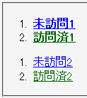
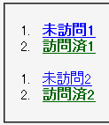

同じ詳細度で擬似クラスへのスタイル宣言と通常のセレクタへのスタイル宣言が存在するとき、これらの出現順序を無視して:visited擬似クラスに指定したスタイル宣言が優先して適用される。
<style type="text/css">
ol a:link {
font-weight: bold;
}
ol a:visited {
font-weight: bold;
}
ol a.nb {
font-weight: normal;
}
</style>
<ol>
<li><a href="b000.html">未訪問1</a></li>
<li><a href="b101.html">訪問済1</a></li>
</ol>
<ol>
<li><a href="b000.html" class="nb">未訪問2</a></li>
<li><a href="b101.html" class="nb">訪問済2</a></li>
</ol>
各リストの1つ目のアイテム内のリンクは未アクセス、2つ目のアイテム内のリンクはアクセス済みの状態を想定しています。class属性に「nb」が指定されたa要素内の文字列は標準の太さで表示されるはずです。
N7.02での表示（標準モード）
WinIE6.0での表示（標準モード）
WinIE6.0標準モード、WinIE6.0互換モードで不具合の発生が確認されました。